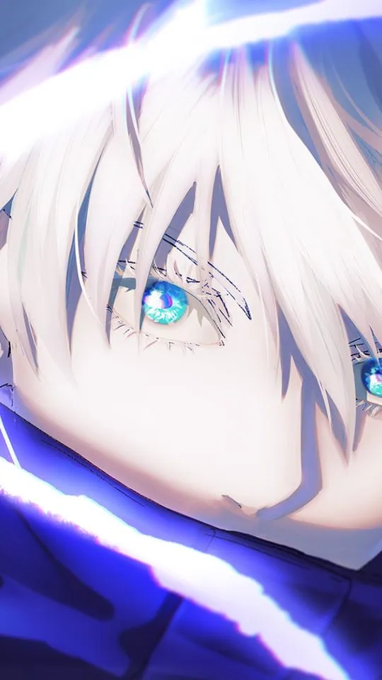

How to Crop and Optimise an Anime Wallpaper Without Ruining It

This guide covers the practical rules for cropping an anime image into a phone wallpaper without cutting off the parts that matter. It explains where to place a character's face, how much headroom to leave, which details to protect, and how to deal with watermarks and text. It finishes with the export settings that keep an image sharp after the phone resizes it.
Start from the best source you can find
Cropping cannot add detail. If you start from a small or heavily compressed image, no amount of careful cropping will make it sharp. Before you open any editor, find the largest clean version available, ideally at least 2000 pixels on the long edge. Check the file size as a rough guide: a clean image 2000 pixels tall is usually 800 KB or more. If the only version you have is small, accept a softer result or look for another source.

Put the face in the upper third
The single most important cropping rule is face placement. On a phone, the top third of the screen is where your eye lands first, and it is also where the least important interface sits. Place the character's eyes on or just above the line one-third of the way down the image.
There is a practical reason beyond composition. Many phones show a clock or status bar at the very top and a dock of icons at the bottom. If you centre the face vertically, the dock often overlaps the chin or chest, which looks careless. Pushing the face up keeps it clear of both.

Leave headroom
Headroom is the empty space above the character's head. Cutting it to zero, so the hair touches the top edge, makes the image feel cramped and also risks the status bar clipping the hair. Leave roughly five to ten percent of the image height as empty space above the highest point of the hair. For a 2400-pixel-tall wallpaper, that is about 120 to 240 pixels of clear space.
Do not cut hands, weapons or props
Anime characters are often posed with a hand raised, a sword held up, or a prop near the edge of the frame. A vertical crop that is slightly too narrow will slice straight through a hand or the tip of a weapon, which reads as an error rather than a choice.
- Zoom out until any hand, weapon or distinctive prop is fully inside the frame.
- If a raised hand reaches above the head, extend the crop upward rather than cutting the fingers.
- If a weapon extends past the side, shift the crop sideways to include it, even if that leaves more empty background on the other side.
- When you genuinely cannot fit everything, cut at a natural break such as the wrist or the middle of a long blade, never through a face or a hand.

Watch the edges where icons sit
The bottom third of a phone screen holds your dock and app icons, and the top holds the status bar. Detailed art placed directly under these areas gets lost. Before you finalise a crop, imagine a row of icons across the bottom quarter. If your crop puts the character's most detailed features there, either move the crop up or accept that those details will be hidden.
A useful test is to set the wallpaper, then look at it with your normal icons in place. If the character looks fine with the interface on top, the crop is good. If the icons cover the eyes or a key prop, adjust and try again.
Dealing with watermarks and text
Many anime images carry a signature, a logo or a caption. There is no clean way to remove a watermark from a finished image, and attempting to paint it out usually leaves a visible smear. The better options, in order of preference, are as follows.
- Find the same artwork from the original artist or a higher-quality source without the mark.
- Crop the watermark out if it sits near an edge, since a vertical crop often removes a corner signature for free.
- If neither is possible, position the wallpaper so the watermark falls under the clock or an icon, where it is less noticeable.
Avoid tools that claim to erase watermarks automatically. On anime line art they tend to blur the surrounding lines and make the problem more obvious.
Exporting at good quality
The export step is where many otherwise good crops are lost. Use these settings.
- Format: JPEG for painted or photographic art. Use PNG only if the image has sharp flat colour and you want to avoid compression artefacts, but note that PNG files are much larger.
- Quality: If your editor offers a quality slider, export at 90 or above. Below 80, gradients and shading start to show banding.
- Size: Export at your screen's exact resolution or slightly above. Do not export at a tiny size to save space, as modern phones have ample storage.
- Colour: Keep the default sRGB profile. Converting to another colour space can shift the colours.
After exporting, open the file once and zoom in to check for blockiness before setting it. This two-second check catches almost every mistake.
Frequently asked questions
Should I crop or stretch an image that does not fit?
Always crop. Stretching distorts the character's proportions and is immediately noticeable. Cropping keeps shapes correct and only removes background you rarely miss on a phone screen.
Where should the character's face go in the frame?
On or just above the upper-third line. This keeps the face clear of the status bar and the app dock, and matches where the eye naturally looks first.
Can I remove a watermark by cropping?
Sometimes, if the mark sits near a corner that your vertical crop discards. If it sits over the artwork itself, cropping will not help and automatic erasing tools usually make it worse. Look for a clean source instead.
What export quality should I use?
JPEG at 90 or higher for most images, at your screen's resolution or slightly above. Avoid going below 80, and keep the sRGB colour profile so colours do not shift.